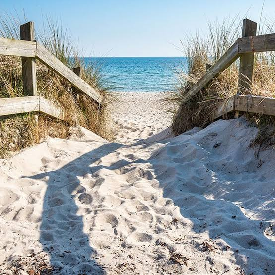

2026 · Utbildning
Webbteknik 1
Linnéuniversitetet, Distans. I kursen arbetar jag med HTML och CSS och med att skapa webbsidor som fungerar på både mobil och större skärmar.
Linnéuniversitetet/Webbprogrammerare/Webbteknik 1
Välkommen till min lilla plats på webben.
Den här sidan är början på min personliga portfolio. Jag skapar den som en del av kursen Webbteknik 1 och använder den för att samla det jag lär mig om HTML, CSS och responsiv design.
Här finns plats för mina erfarenheter, mina intressen och det jag vill göra framöver. Sidan får växa tillsammans med mig, ett steg och ett projekt i taget.
Lär känna mig01 / Erfarenhet
Jag är utbildad och legitimerad sjuksköterska sedan flera år tillbaka. Jag har arbetat inom olika vårdmiljöer och samlat värdefulla erfarenheter som jag nu tar med mig in i webbutvecklingens värld. Förhoppningsvis kan jag kombinera mina tidigare kunskaper med nya färdigheter för att skapa meningsfulla och användarvänliga webblösningar.
Den här webbplatsen är ett andra exempel på hur jag omsätter kursens innehåll i något konkret. Struktur, layout och tillgänglighet får mötas i samma projekt.
Lärande pågår ↗2026 · Utbildning
Linnéuniversitetet, Distans. I kursen arbetar jag med HTML och CSS och med att skapa webbsidor som fungerar på både mobil och större skärmar.
2026 · Kursprojekt
En responsiv sida med tydliga sektioner, lokal bildhantering och navigering inom sidan. Ett projekt att fortsätta utveckla efter kursen.
2020 · Självstudier
Jag har sedan länge sen intresserat mig för programmering och webbutveckling och arbetar kontinuerligt med att förbättra mina färdigheter inom området. Jag har privat lärt mig olika programmeringsspråk och byggt egna projekt för att fördjupa min förståelse. Jag har även läst olika kursen på Högskolan och Universitetet. Senaste läste jag en termin på en Yrkeshögskola. Med min akademisk bakgrund bestående av en kandidat inom sjuksköterskeprogrammet och två magisterexamen inom intensvivård och anestesi upplevde jag dock att utbildning på en yrkeshögskola inte var tillräcklig för mina ambitioner inom webbutveckling, varför jag sökte vidate till högskolan. Jag har även tränat en hel del på Hyperskill, UDEMI, W3schools, Supersimplewebdev med mera.
02 / Intressen
Vill helst uppleva det här regelbundet.

Jag tränar regelbundet på gymmet och cyklar på landsvägar när vädret tillåter. Sent vår, sommar och tidig höst är mina favoritperioder för utomhusaktiviteter. Vädret och vägunderlaget påverkar ofta mina träningspass.
Jag äger en Merida Endurance 4000 för vardaglig cykling och använder den både för träning och pendling. Jag äger också Scott Addict Racer RC 20 för längre och snabbare turer.
Nyfikenhet / Kreativitet / Utveckling
03 / Framtid
Det här är en början. Jag kommer att fylla det med fler berättelser och projekt framöver.
Fylla på med mina egna berättelser, erfarenheter och bilder så att portfolion speglar vem jag är.
Visa kommande arbeten och beskriva hur de växer fram, vilka problem de löser och vad jag lär mig längs vägen.
Bygga vidare på grunderna i HTML och CSS och förbättra både sidans innehåll och upplevelsen för besökaren.
En sida att växa med: början till något stort
Tillbaka till början ↑